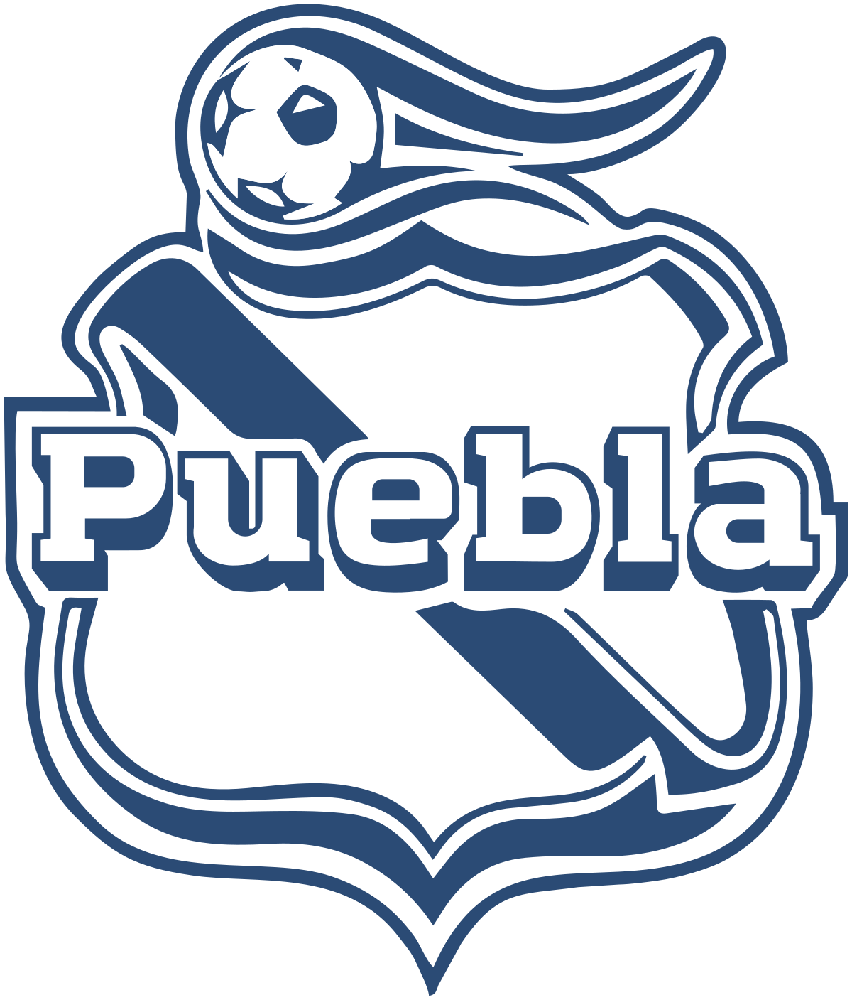

Cabecera Tu blog de cabecera
Este es el título atractivo e interesante del post
Y este es el parrafo de inicio donde vamos a explicar las cosas increibles que se pueden hacer con ramas

Los blogs son la mejor manera de compartir información y tus ideas. Mucho más que salir a conferencias o salir en Youtube.
Suscribete y dale like